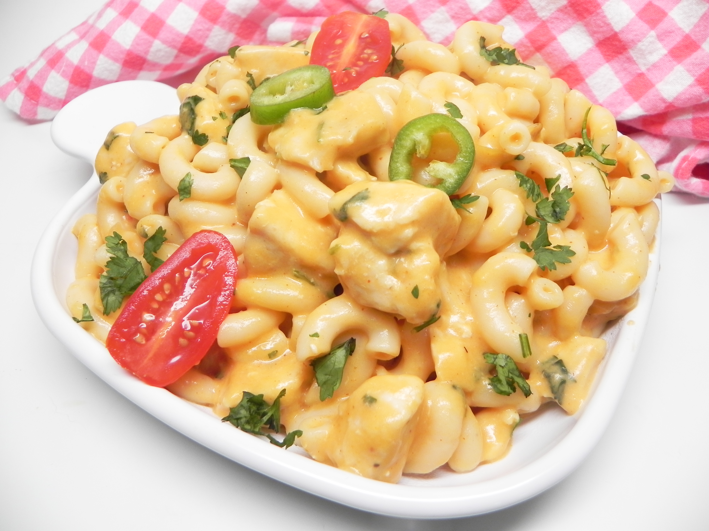

Mac And Cheese

Description
Have some leftover chicken that you don't know what to do with?
Transform it into a cheesy and comforting one-pot dinner sensation.
Garnish with your favorite enchilada toppings if desired.
- 16 ounces elbow macaroni
- 1 (10 ounce) can red enchilada sauce
- 1 cup half-and-half
- 1 (4 ounce) can chopped green chilies
- 2 cups shredded sharp Cheddar cheese
- 2 cups shredded pepperjack cheese
- 2 cups cubed cooked chicken
- ¼ cup chopped cilantro
- Bring a large pot of lightly salted water to a boil. Cook elbow macaroni in the boiling water,
stirring occasionally, until tender yet firm to the bite, about 8 minutes. Drain and set aside.
- Combine enchilada sauce, half-and-half, and green chiles in the same pot over medium heat and cook
until warm, 5 to 10 minutes. Slowly add Cheddar cheese and pepperjack cheese and whisk continuously
until melted, about 5 minutes. Return cooked macaroni to the pot. Add chicken and cilantro and stir
until combined and heated through, about 5 minutes more.